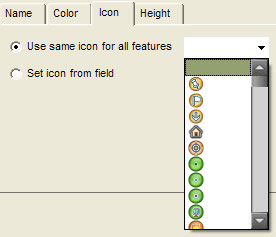
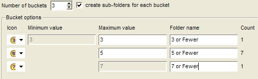
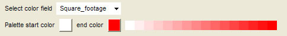

Using Style Templates
Often the data you import into Google Earth contains multiple features that are not
automatically converted into a readily visible feature in the 3D viewer. For example, a
shape file defining the population boundaries for a specific region might have a field
that supplies the population number for each boundary defined in the data. Or, a CSV file
might contain real estate listings with a field showing the square footage of each
listing.
You can use style templates when importing this data in order to display fields in your
data in meaningful ways.
This is accomplished by mapping or connecting specific fields in your imported
data to one of four template display features:
-
Name - By default, if a field for your data contains the
phrase name as its label, Google Earth maps that field to the name displayed
in the viewer for your point. However, you can map any field in your imported data to
the Name element.
-
Color - The color field applies color to your data. Icons are
colored if you import point data, and shapes or lines are colored if you imported that
type of data. For more information, see Mapping Color Styles.
-
Icons - You can use the icon display feature to select an
icon from the list for your imported point data. You can select a single icon for all
point data, apply icons randomly, or select specific icons for specific fields. See
Mapping Icons to Point Data.
-
Height - The height feature generates a height for the
selected column in your data. If the selected data is numeric, height values can be
spread across a range of values. If the data is text, icons can be supplied to
individual fields. See Mapping Height Values.
The rest of this section covers:
Applying a Style Template
This section covers the basic steps for applying a style template to vector data that
contains fields you want to have displayed in the 3D viewer. You can apply style
templates to newly ingested data or to existing KML data. In addition, you can modify
existing templates using the steps below.
Note - Style templates are quite specific to the data you are working
with. While you can use the same style template for different data that has the same
fields, the template settings will often have to be adjusted to represent the data
properly. As your original data set changes with new data, you might also need to adjust
the template to accommodate new information.
-
Choose the data that will have the style template applied to it. If
you are importing the data for the first time, simply click the Yes button
when prompted to apply a style template.
- If you already have this data in your Places panel, select the
parent folder and click Edit > Apply Style Template. (Use this
method when you want to edit a recently-created style template.)
- In the Style Template Settings dialog box, indicate whether you
are creating a new template or using an existing one.
- If you have an existing style template for your data, it appears in the
Compatible templates list along with any other style template that is compatible
to the data you have selected. If you choose to use an existing style template, select
the correct one from the list. If you simply want to apply the template to your data
without changing the template itself, leave the edit selected template check box
clear. To edit the style template, select the check box.
- When you create new template or edit an existing one, the Style
Template Settings dialog box appears.
- Choose a field from your data that you want to use as a Name, or label, for
your data. This name appears in the 3D viewer as well as in the Places panel that lists
the data points.
- Click on the Color tab and map an element of your data to color styles. See
Mapping Color Styles for details.
- Click the Icon tab and map and element of your data to one or more icons.
See Mapping Icons to Point Data for details.
- Click the Height tab to map a height value to a data element. See
Mapping Height Values for details.
- Click OK when you are finished defining your styles. The values defined
appear in the 3D viewer.
The rest of this section discusses in detail how to apply template values to data.
Finally, you can use the instructions in A Style Template Example
to walk through the process of defining a style template on sample point data from a text
file.
Mapping Color Styles
You can apply color to selected fields in your imported data. In this case, color is
applied to the feature depending upon the type of data imported:
-
Icons are colored with point data
-
Lines are colored when applying to lines or paths
-
Solid polygons are colored with shape data
Use the color style to color these elements in a meaningful way depending upon both the
data type and the field data within the entire set. You can use three mechanisms to color
data:
- Use a single color for all features
- Use random colors
- Set colors based on field values
The rest of this section describes how to use these color application methods.
Using a Single Color
If you want to use one color for all the points or lines from your imported data, select
the Use single color option and click on the colored square next to the option.
From the color selector, choose a color or define your own color to apply to the data.
Using Random Colors
To use a variety of colors that are applied randomly by Google Earth, select the Use
random colors option.
Note - The line or point data will be colored based on values supplied
by Google Earth. If you are also supplying an icon for point data, the color is added to
the existing color of the icon.
Setting Colors Based on Field Values
While applying colors to data features helps distinguish features from each other in the
3D viewer, using colors based on field values provides a way to display data about the
feature set that you couldn't otherwise easily display. For example, you might want to
set a short range of colors based on the square footage of real estate listings. Or, you
might want to set a range of colors for shape files showing average household income.
Use the following steps to define color values by a data field.
- Select the Set color from field option in the Color tab.
- Choose the field that you want to apply color data to from the Set color field
drop-down list. Here, you can choose either numeric fields or text fields from your data.
See Choosing Field Types for Style Mapping.
- Choose the starting and ending color (optional) for your color mapping. By default,
the style template "color buckets" are created from blue and mapped through the spectrum
to red. If you want to change the color range, you can click on each color block and set
the starting and ending colors as desired. Google Earth automatically calculates the
color range between the two chosen values.
- Use the Number of buckets selector to indicate how to group the range of
field values. This option is only available for fields with numeric data. The ranges for
each bucket are automatically computed, but can be adjusted manually. See Customizing the Value Range for Numeric Data for details. To learn
how buckets behave for string and numeric fields, see Using Buckets
for Field Data.
- Make any further desired adjustments.
-
Subfolders - You can create subfolders for each color bucket so
that the Places listing displays the data elements grouped by color into
their respective folders. This makes it easier for you to show or hide the display
of color groups simply by selecting or removing the check box next to the folder.
Once you select the sub-folder option, you must provide a name for your sub-folder
in order for the data to be properly grouped in the Places listing. Note
that you can only define a single sub-folder option for either color or icon
display.

-
Color display order - You can click the Reverse order
button to reverse the display order of the color range. So, if you have a range of
colors starting with blue for the first element and ending with red for the last
one, reversing the order will apply red to the first element and blue to the last.
-
Color adjustments to single buckets - You can modify each color
element individually by clicking on it and adjusting the color for that particular
value or value range. In addition, you can modify the settings for numeric buckets
to adjust the spread of the data to your preference. See Customizing the Value Range for Numeric Data to learn how to
adjust the numeric ranges once you choose the number of buckets for a range of
numbers.
-
Click the OK button to apply and view your changes. - Save
the style template. You can always edit the template to apply icon and height styles or
to make additional color adjustments. Do this by following the instructions in Applying a Style Template.
Mapping Icons to Point Data
As with color, you can apply icons to fields in your data. However, icons can only be
mapped to point data, so if you are importing line or shape data, the Icon style tab will
be unavailable. You can use two mechanisms for mapping icons to points:
-
Use the same icon for all features - To do this, simply select the Use
same icon for all features option and choose an icon from the drop-down list.

-
Set icon from a field - The actions for doing this are similar to
those described in Mapping Color Styles, and are described in
the sections that follow.
Setting Icons Based on Fields
These steps describe the basic process of mapping icons to fields in your data. The
following steps describe the basic process for defining color values by a data field.
- Select the Set icon from field option in the Icon tab.
- Choose the field that you want to apply icon labels to from the Set icon from
field drop-down list. Here, you can choose either numeric fields or text fields from
your data. See Choosing Field Types for Style Mapping.
- Use the Number of buckets selector to indicate how to group the range of
field values. This option is only available for fields with numeric data. The ranges for
each bucket are automatically computed but can be adjusted manually. See Customizing the Value Range for Numeric Data for details. To learn
how buckets behave for string and numeric fields, see Using Buckets
for Field Data.
- For each bucket defined, select an icon from the list.
- Make any further desired adjustments:
-
Subfolders - You can create subfolders for each icon bucket so
that the Places listing displays the data elements grouped by the folder
label into their respective folders. This makes it easier for you to show or hide
the display of icon groups simply by selecting or removing the check box next to
the folder. Once you select the subfolder option, you must provide a name for your
sub-folder in order for the data to be properly grouped in the Places
listing.

Note: You can only define a single subfolder option for either color
or icon display.
-
Icon adjustments to single buckets - You can modify each icon
element individually by clicking on it and adjusting the icon for that particular
value or value range.
- In addition, you can modify the settings for numeric buckets to adjust the spread
of the data to your preference. See Customizing the Value
Range for Numeric Data to learn how to adjust the numeric ranges once you choose
the number of buckets for a range of numbers.
- Click OK to apply and view your changes.
- Save the style template. You can always edit the template to apply icon and height
styles or to make additional color adjustments. Do this by following the instructions in
Applying a Style Template.
Mapping Height Values
By default, no height values are defined initially in the Height tab. Use the
Height tab in the Style Template Settings dialog box to set height
values from a selected field. Once height values are activated, points, lines, or shapes
are extruded from ground level to the height defined for each data element. If you map
height to lines or shapes, the values you define work in combination with the colors
defined in the Color tab.
On the other hand, if you map height to point data, those points are extruded using a
single pixel colored line to connect the icon from its elevated position to the ground.
You can use style settings to modify the width and color of those lines if you wish.
The rest of this section covers details for using height values effectively, including:
Height Values for Text Fields
The height map settings for text fields differ from those for numeric fields. If the
field you choose to map contains text data, the first 8 unique fields are each defined in
their own container, or bucket. For this reason, it makes sense to only map height values
to a field that has 8 or fewer unique values. See Choosing Field
Types for Style Mapping for more details.
When you map height values to a text field, the following settings are available:
-
Individual height values - The height mapping wizard automatically
calculates reasonable height values for your data given its geographical extents. For
example, for points clustered around a small region, 20 - 2000 meters might be adequate
to view all points as elevated when looking at the entire set in the 3D viewer. On the
other hand, if your data set encompasses an entire state, higher values are calculated
so that height is apparent when looking over the entire region in the 3D viewer.
You can always modify the height values by hand to adjust each point to your
preference. In general, the greater the distinction between each point, the easier it
is to visualize that distinction in the 3D viewer from a distance. Height
units - By default, height units are set to meters, but you can change them to
feet if you prefer. When you change the default value from meters to feet, you might
want to adjust the values in each bucket upward to make the data visible in the 3D
viewer.
-
Scaling factor - Use the Scaling factor slider to uniformly
adjust the numeric values in all height fields. The slider provides a general factor
from .1 times the value to 10 times the value defined in each field. If you manually
adjust the height values, you can also use the Scaling factor slider to make
further adjustments to those numbers.
Height Values for Numeric Fields
When you map height values to a numeric field in your data, you can choose from two types
of mapping methods: continuous or split into buckets.
Using Continuous Mapping
The continuous mapping method uses the minimum and maximum values of your selected field
to determine a minimum and maximum height display for the entire set. It then maps all
data within the set in a way that best corresponds to each individual field. In the
example, the Square_footage field is used to map height values, with the minimum
value of 2000 and a maximum value of 6234. Each of the 9 elements in the set is displayed
at a slightly different height value that most accurately displays its relationship to
the other points. This particular method is useful in smaller data sets where individual
distinctions between points or shapes are easily visualized.
With the continuous mapping method, you can use the Scaling factor slider and
the Height units selector as described above in Height
Values for Text Fields. Additionally, you can enter the desired height you want for
the beginning and ending ranges of your data. For example, you might want houses starting
at 2000 feet to be displayed in the 3D viewer at a height of 100 meters, and houses at
the ending range to be displayed at a height of 5000 meters.
In the 3D viewer, the visual distinction between individual elements using this method is
affected by both the height range you set and by the number of elements in the data. For
example, a range of 100 - 5000 meters for a set containing only 9 elements creates a
visually distinct height for each point.
If you decrease the range or increase the number of elements in the set, the distinction
between each element diminishes.
Splitting Values into Buckets
Use the Split into buckets mapping method to create up to 8 height groupings for
your data. This method works well for large data sets where continuously mapped heights
are not easily visualized in the 3D viewer. For example, if your data set contains over
1000 housing listings clustered around a small region, it might be difficult to see the
actual difference between houses in different height categories. By using the Split
into buckets option, you can create more meaningful categories and define visually
distinct gaps in their display. For example, you might have all listings between 2000 -
3000 square feet display at a height of 500 meters, all listings between 3000 - 4000
square feet display at a height of 1500 meters, and so on. While this method will not
distinguish a house at 3000 square feet from one at 3200 square feet, it will allow a
more immediate visual grasp of the categories you have defined.
As with color and icon styles, the maximum value for each bucket is automatically
computed, but can be adjusted manually. Use the Scaling factor slider and the
Height units selector for this method as described above in Height Values for Text Fields. As you set the number of buckets and
define the maximum value for each bucket, the Style Template wizard displays the count of
items for each bucket. For more details, see Using Buckets for Field
Data.
Using Style Settings to Modify Point Display
The color values you set for point data are applied to the icon that you map to points as
well as to the line that is extruded from the point on the earth for the height of the
line, as shown in the real estate listing example above. However, in some cases it might
not be easy to visualize a single-pixel line in the 3D viewer against the earth imagery.
In that case, you can edit the style settings for each point in order to modify the line
thickness.
- Right-click (CTRL click on the Mac) on the point you want to modify and select
Properties from the pop-up menu.
- In the Edit Placemark dialog box, in the Style, Color tab, modify the
point's appearance as appropriate.
- Click OK.
Since this process is not practical for large data sets, you might consider applying
changes to entire folders or subfolders. Beware that if you do this, any individually
defined styles will be lost. In this case, use the sub-folder feature of the Style
Template wizard to group similarly styled data into subfolders. Make sure that each
folder created has similar color and icon data. Then, apply the height value to your data
and save the style template. Later, use the steps above to create shared styles for each
subfolder you set up. As long as all of the data within each folder has the same color
value and the same icon value, changes to the line thickness will not impact those
settings.
Using Buckets for Field Data
When using color, icon, or height mapping for specific fields in your data set, you
typically define a number of buckets, or containers, to distinguish different ranges of
data. The sections that follow describe how different field types are interpreted by
style templates, as well as how you can adjust the range of values when mapping numeric
data.
Choosing Field Types for Style Mapping
You can choose two basic types of fields from your data when mapping color, icon, or
height values:
-
Text (string) fields - If the field that you map to color or other
style contains non-numeric data (i.e., text and other characters), the application
looks for the first 8 unique text fields, and maps those fields to the style.
If there are fewer than 8 values in your data, each unique value is paired to a
different color, icon, or height. If there are more than 8 values, the first 8 unique
values are mapped to a style, and the rest of the values are grouped together and
mapped to a ninth style. For this reason, it typically is most useful to apply a style
to text fields that contain small unique sets.
For example, in the real estate example described in A Style
Template Example, there is a field in the data called School_district.
This field defines the school district ratings for each listed house. Because there are
only three districts: AA, AAA, and AAAA, it makes sense to
use a style to distinguish this type of text field. You might, for instance, decide to
map a height to this field, so that users viewing your data see the highest points as
those belonging to houses in the highest-rated districts, and so on.
-
Numeric field - If the field that you choose contains numeric data,
the application automatically apportions the numeric data across the number of buckets
that you select, and provides a count of items in each bucket. If you increase or
decrease the number of buckets, the application automatically re-apportions the number
of elements for each bucket.
Note - If you are using a spreadsheet application such as Microsoft
Excel to create your data, be sure that the cell format you choose for numeric fields has
been set to numeric and not text. If you have numeric fields in your CSV saved
from a spreadsheet, but the Style Template wizard is not recognizing it as
numeric, it might be due to incorrect formatting. To verify whether the actual field is
marked as text or numeric, open the CSV file in a simple text editor and look at the
field in question. If it is enclosed in double quotation marks, then it has been defined
as text — even if there are only numbers within the quotations. You can remove the
quotation marks manually from the file, or open your spreadsheet application and format
the cells as numeric and save the CSV data again.
Customizing the Value Ranges for Numeric
Data
Typically, you will want to customize the numeric values to define buckets in ranges that
are more meaningful for your data. For example, you might modify the ranges displayed in
the example above to round figures typically used to describe square footage for houses.
To do this, simply enter the values you want as the maximum value for each bucket. As you
do this, the number of elements contained by the new definition updates to reflect your
changes.
Keep in mind the following about how to adjust numeric field values:
-
You cannot adjust the minimum value for the set, nor the maximum
value. This means that the range for the last bucket is actually defined by
the maximum value of the previous bucket. In the example above, then, if you want to
change the last bucket to contain 4 items, you would decrease the maximum value of the
green bucket until the Count field showed 4. You must adjust the
values for each bucket so as not to collide with the values defined for other
buckets. When organizing your data into buckets, it's easiest to sketch your
bucket values down first before attempting to adjust them in the Bucket
options fields, or to start at one end of the data set and work toward the other.
You cannot enter a value in one bucket that is either greater than the maximum value of
the next bucket, or less than the maximum value of the previous bucket.
For example, in the first color bucket example above, suppose you know that you want
your first bucket to show all houses with a square footage of 5000 or less, and you
want the second bucket to show a narrow range of houses from 5000 to 5500 square feet.
If you enter the number 5000 next to the first bucket, you will receive an alert asking
you to pick a number between 2000 and 4822.67. Because the maximum value of the next
higher bucket is 4822.67, you cannot enter a value in the previous bucket that exceeds
it. Thus, to accomplish your goal, you would first need to adjust the second bucket's
maximum value to 5500. At that point, you could adjust the value of the first bucket to
5000.
-
Field data whose numbers exceed a certain number of digits might display in
scientific notation. Depending upon the size of the input box on your screen,
some larger numbers (such as those exceeding 6 digits) will display in scientific
notation. For example, you might see the number 1,628,000 displayed as
1.628e+06. If you move the decimal point over 6 places, you will obtain the
number in regular notation.
A Style Template Example
This tutorial is designed to help familiarize you with the basic process of defining,
editing, and using a style template for any data you import into Google Earth. This
example uses a text file saved in CSV (Comma Separated Value) format showing some
fictional real estate listings in the greater Detroit area. This tutorial covers the
following:
Saving the Sample File
- Use this provided sample real estate
listing to follow along with this tutorial. Click on the link and save the file to
your computer. If you are using Firefox, right-click (CTRL click on the Mac) on the link
and select Save Link As... from the pop-up menu. You can also open and view it with a
spreadsheet application if you wish. Navigate to a location on your computer's hard drive
(such as My Documents or Documents) and save the file.
- To avoid the confusion in the rest of this tutorial, keep the sample file named
MetroDetroitRE.csv.
Use this file in the rest of this tutorial as your GIS data source. If you are curious
what a comma-separated text file looks like, open the file using a simple text editor. If
you do this, close it without saving any changes.
Importing the File
- Click File > Import. Navigate to the place on your computer's hard drive
where you saved the file in the steps above. Select the MetroDetroitRE.csv file and click
Open. Click Yes when asked if you want to apply a style template.
- In the Style Template Options dialog box, verify that Create new template is selected
and click OK.
You are now ready to create and view the style template.
Creating Style Template Name and Color
Settings
In this section, you will supply a name label to the real estate listings and color code
the listings based on the Square_footage field. After that, you will save the
template and view your settings.
- With the Style Template Options dialog box open, be sure the Name tab is active.
- Click the black arrow next to the Set name field selector.
- Choose the first field in the list, Address.
Notice how the preview table shows the Address column as selected. You can also click
on the column heading of any column in the preview table to change your choice. When
you are finished, be sure the Address column is the selected element for the Name
field.
- Click the Color tab. Notice how the default setting here is to use a single color for
the point data, and that the color is set to white.
- Select the Set color from field option.
- From the Select color field selector, choose Square_footage as the field. Again, you
can see how the Square_footage column is selected as the chosen field in the
data preview table.
- Adjust the color range to your preference. For instance, suppose you want graduations
of a single color red from light to dark. Click the color square next to Palette start
color and choose white in the color picker dialog box. Since the default ending color is
already red, you can leave that square as it is. The color range gradient will update to
reflect your new choice.

- This tutorial will use the default color palette range of blue to red. To change it
back, simply click on the white color box and choose a blue color from the color picker.
- In the Number of buckets selector, set the number to 3 if it is not already.
- Select the create sub-folders for each bucket check box.
- In the Bucket options area, set the Maximum value fields from lowest to highest as
follows:
Notice the slight adjustment in the count fields.
- Provide meaningful folder names for each bucket. For example:
- 2000 - 3000 Square Feet
- 3000 - 4000 Square Feet
- 4000 - 6500 Square Feet
- Click OK at the bottom of the Style Template Settings window.
- In the Save Template dialog box, click the Save button. Note that the name of the
template file corresponds to the name of your imported file.
- Leave this name as it is, and click the Save button. The 3D viewer adjusts to
encompass all the points in the data file. Notice that the number of blue icons
corresponds to the count next to the blue bucket and so on for all three buckets (3 blue,
2 green, 3 red).
- In the Temporary Places folder within the Places panel, expand both parent folders
until you see the three subfolders you created in the steps above.
You can turn off the display of all houses contained within a given folder simply by
removing the check mark next to that folder.
You can also adjust the ordering of the folders by dragging the 3000 - 4000 Square
Feet folder to the space between the two remaining folders, so that the order
appears in sequence.
Take some time to explore the data related to each point. You can double-click on an item
within a folder to zoom into that view as well as to view the info balloon for the point.
Or, click on the point in the 3D viewer to view the info balloon.
Modifying the Style Template for Icon
Settings
In this section, you modify the style template you've saved to apply icons that display
the number of bedrooms for each listing.
- Right-click (CTRL click on the Mac) on the top-most folder called MetroDetroitRE.csv
and select Apply Style Template... from the pop-up menu.
- In the Style Template Options dialog box, select Use existing template.
- Select the MetroDetroitRE template from the list if it is not already, and check edit
selected template.
- Click the OK button and in the Style Template Settings dialog box, click the Icon
tab.
- Choose the Set icon from field option and in the Select icon field selector, choose
Bedroom from the list, or click on the Bedroom column in the preview table.
- Set the Number of buckets selector to 4. Notice the count display that shows how many
listings have the corresponding number of bedrooms per value.
- From the Icon selector next to each bucket, choose the number icon that corresponds
to the maximum value for each field.
- Click the OK button on the Style Template Settings dialog box.
- In the Save Template dialog box, click Save, and when prompted to overwrite the
existing template, click Yes. In the 3D viewer, you should see the icons change to
reflect your settings.
Removing Duplicate Folders
Each time you modify a style template, any folders you have created using folder options
are duplicated.
Because you might have hand-modified data within the parent folder (including manually
created sub-folders), the style template wizard avoids over writing your data and simply
creates another set of folders, removing the visibility check from the older ones. You
can choose to retain this historical data (which will increase each time you modify and
save a template), or you can right-click (CTRL click on the Mac) on the folders you no
longer want and select Delete from the pop-up menu.
Adding Height Values
In this section of the tutorial, you will modify the style template to create height
values based on the price of the house.
- Right-click (CTRL click on the Mac) on the top-most MetroDetroitRE.csv folder and
select Apply Style Template... from the pop-up menu.
- Choose the Use existing template option, select the template, and check the edit
selected template check box.
- Click the Height tab in the Style Template Settings dialog box and choose the Set
height from field option.
- Click the Price column in the table preview to choose the price field for height.
- Select Continuous as the mapping method.
- Leave the Scaling factor slider to 1.0 and the Height units to meters.
- Next to the minimum value row, replace 20.4005 with 100 as the value.
- Next to the maximum value row, replace 2040.05 with 5000 as the value.
- Click the OK button on the Style Template Settings dialog box and save the template,
replacing the previous version.
- If desired, remove the duplicate folders from the parent folder.
- Tilt the view in the 3D viewer to see the effects of your settings.
Creating a Map Legend
In this final section of the tutorial, you can view the code behind a sample KMZ file
designed to create a legend for the 3D viewer so that users can readily view the meaning
of the settings you've defined in the style template. If you click on the link for this
KMZ file, you can open it in your Google Earth browser to view the legend for the data
you've created here. You can also save the file to your computer and open it using a text
editor to see the code that is described in this section.
The diagram that follows shows the code used to create the KMZ file. Using the KMZ file
you opened as a model, you can create your own screen overlay for your own data as
follows (these tips assume you understand how to use basic web-oriented tools such as
FTP, image editors, and HTML editors):
- Replace the referenced graphic with a graphic that you create using a graphics tool
application such as Adobe Photoshop or Microsoft Paint.
- Save the graphic you create in a compatible format such as PNG, GIF, or JPEG.
- If you want the graphic to be viewable on the web or a network, be sure to place the
graphic in a location others can access it, and use the correct URL to reference it
(i.e., \\networkpath\folder\folder\imageFile.png for network files or
http://www.test.com/images/myScreenOverlay.png for web-based files).
- Name the file with a meaningful name and an extension of .kmz.

- Enter the name of your screen legend between the <name></name>
tags. This name appears in the Places panel. You can drag this into the parent folder of
your style template.
- Enter the correct URL of the image that you use to create the legend. Here,
the sample path is the formate you use to reference an image on your local computer. For
images on a web server, use the URL to the image itself (not the web page containing the
image, and be sure the image has been uploaded to the location referenced by the URL.